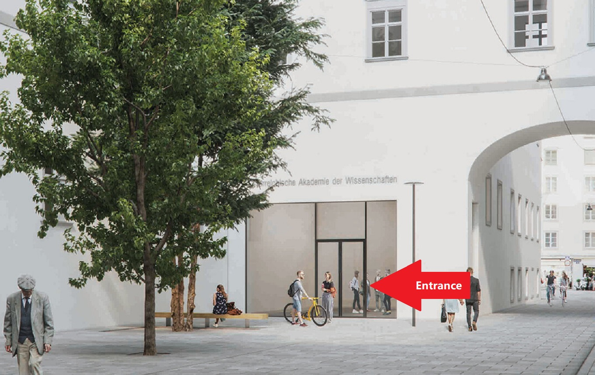
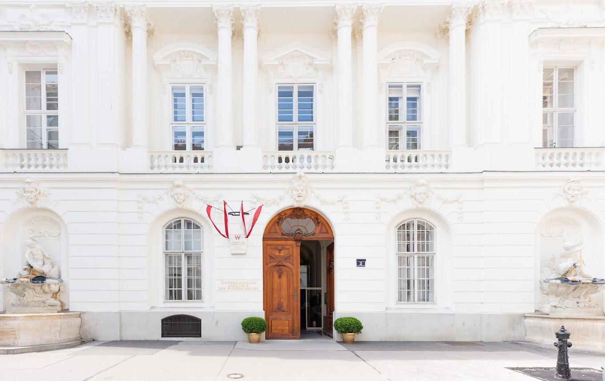

Life Narrative and the Digital 2023:
Interdisciplinary Conference and Workshop
26-27 September 2023
Austrian Centre for Digital Humanities and Cultural Heritage,
Austrian Academy of Sciences, Vienna
Venue Locations
Tuesday, 26 September 2023
Venue 1: Campus Akademie, Seminar Room 1
You can enter the building from Bäckerstraße 13:

Wednesday, 27 September 2023
Venue 2: Dr.-Ignaz-Seipel-Platz 2, Sitzungssaal
You can enter the building from Dr.-Ignaz-Seipel-Platz 2:

How to Travel to/within Vienna
Travelling to Vienna by plane (Tourist Info Vienna)
Travelling to Vienna by train (Tourist Info Vienna)
Travelling in Vienna by public transport (City of Vienna)
How to Get to the Venues
Find Venue 1  and Venue 2 , as well as nearby supermarkets, pharmacies, restaurants, cafés, ATMs, and sights with Google Maps:
and Venue 2 , as well as nearby supermarkets, pharmacies, restaurants, cafés, ATMs, and sights with Google Maps:


#DigitalBio2023

v3.0.8